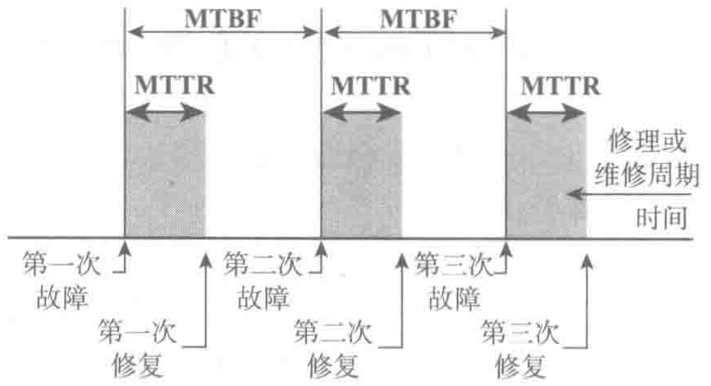

载需求的概率：
式中：
MTTR（Mean Time to Repair）——平均故障修复时间，它是系统从非运行状态到重新给系统加电的平均时间（它包括故障的检测、维修到重新启动所需要的时间）；
MTBF（Mean Time Between Failures）——平均无故障时间，它表示设备正常运行并因此而产生效益的平均时间（见图3-12）。

从数学上讲，100%的可用性意味着MTTR为零（立即修复）或MTBF为无穷大（即连续供电而永远不出现故障），这在统计学上和事实上是不可能的。实际上，MTTR越短或MTBF越长则可用性越高，它意味着电源供电的有效运行时间也越长。例如，在传统经济中，电网电力的可用性通常为99.9%，即3个“9”；数字化经济时代的数据机房的电力可用性通常为99.999…%，即5个“9”以上；而电信基础设施的通信枢纽机房的电力可用性应为99.99999…%，即7个“9”以上；等等。
与可用性相对应的是“不可用性”，它表示为[1−可用性]，通常用来表示一年中供电的“无效时间”（见图3-13）。例如，3个“9”，对应的每年无效时间为8.76h；5个“9”，对应的无效时间为5.3min；7个“9”，对应的无效时间为3.15s。
（2）可用性的内涵
| 可用性 | 年无效时间 |
|---|---|
| 99.00% | 87.6h |
| 99.90% | 8.76h |
| 99.99% | 52.56min |
| 99.999% | 5.256min |
| 99.9999% | 31.536s |
| 99.99999% | 3.1536s |
| 99.999999% | 0.3154s |
对于一个电源系统来说，单一的可靠性指标MTBF已经不足以描述电源系统正常工作的时间。事实上，所有现场的基础设施故障中，95%是发生在UPS与负载之间的。因此，“电源可用性”就是考虑从公用电网直到负载设备之间的所有供电环节的有效性。
“可用性”概念包含了多种关键因素：
- 故障容错：延长负载输入端之前的电源系统MTBF的一种方法就是采用“故